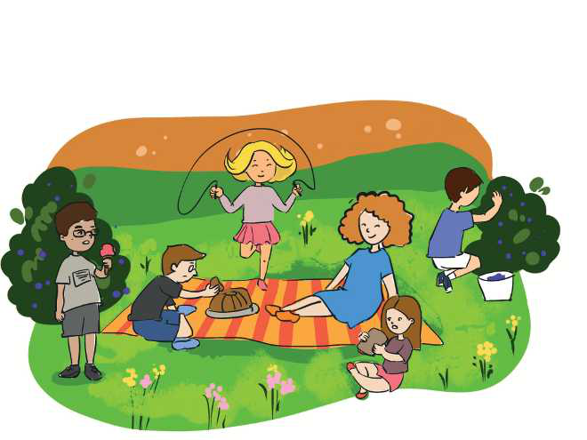

TEMATIKA 5: MJEDISI DHE SHËNDETI
4.PIKNIK NË NATYRË

Dita dhe Dielli ishin të entuziazmuar. Së bashku me mësuesen, e gjithë klasa kishin vendosur të bënin një piknik në natyrë.
Pasi luajtën dhe u kënaqën shumë, ata filluan të mblidhnin mbeturinat dhe t’i hidhnin nëpër koshat e caktuar. Mirëpo Dardani nuk deshi t’u bashkohej dhe tha se sot donte të argëtohej dhe jo të punonte.